Porky's Legacy: Era of Corruption
OVERVIEW
So many people has gone missing inside the thick fog that floods the Ominous Valley, many reports say that all those people lost someone close before entering the valley, it seems like a need, a bind between life and death, lot of them have been found dead and mutilated inside the valley, there's something seeking behind the trees in that place that hunts its victims, also the valley kept growing and appearing in other places.
It seems that there's something even deep about this valley that we're not aware.

GALLERY
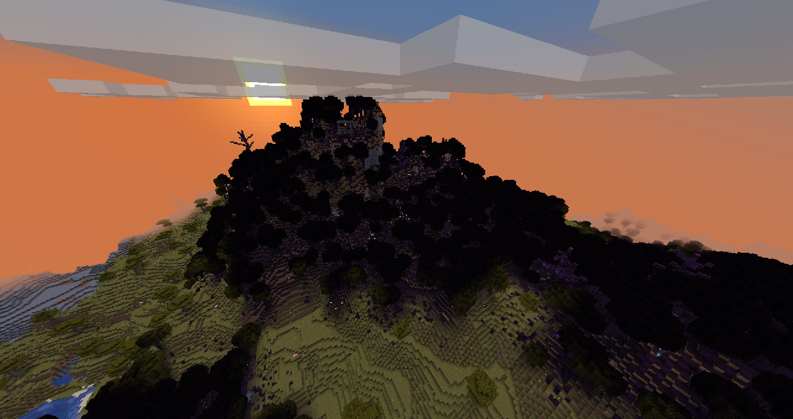
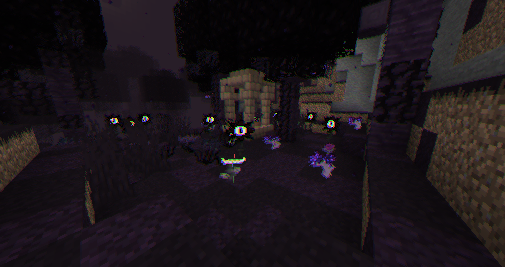
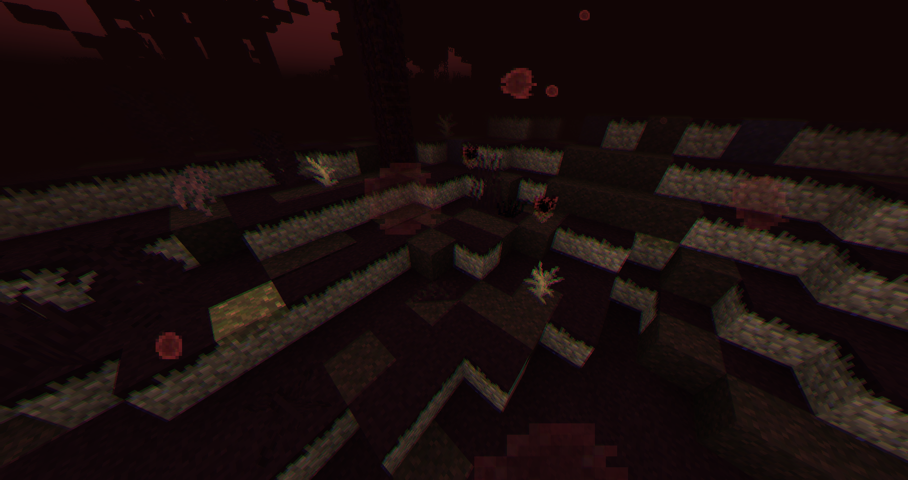
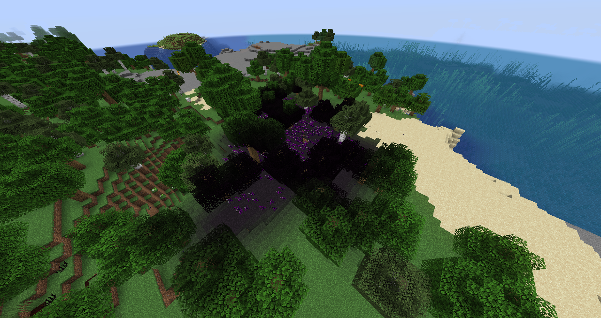
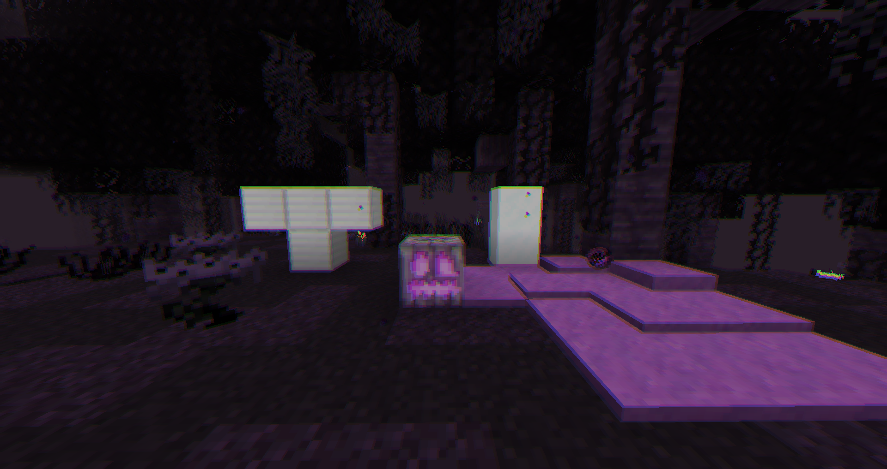
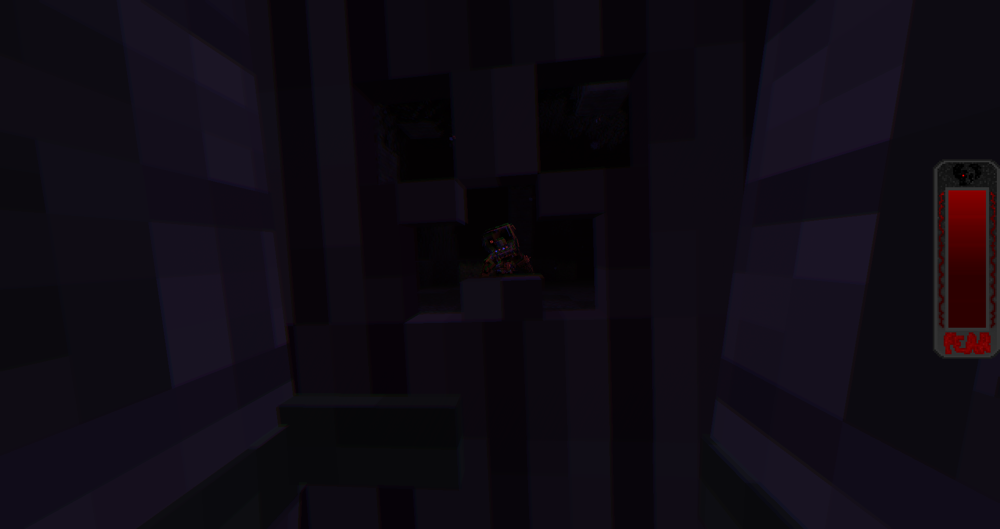
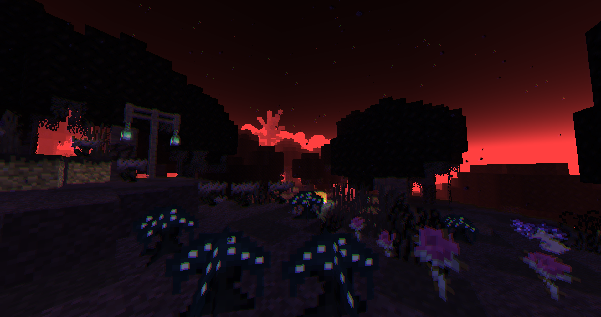
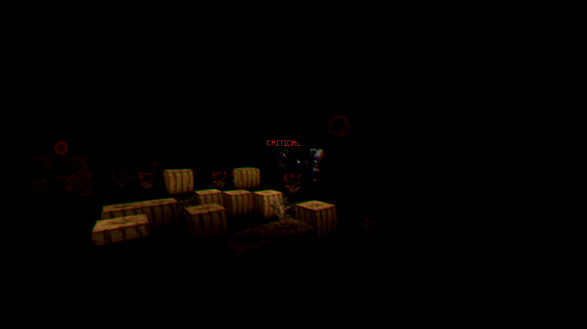
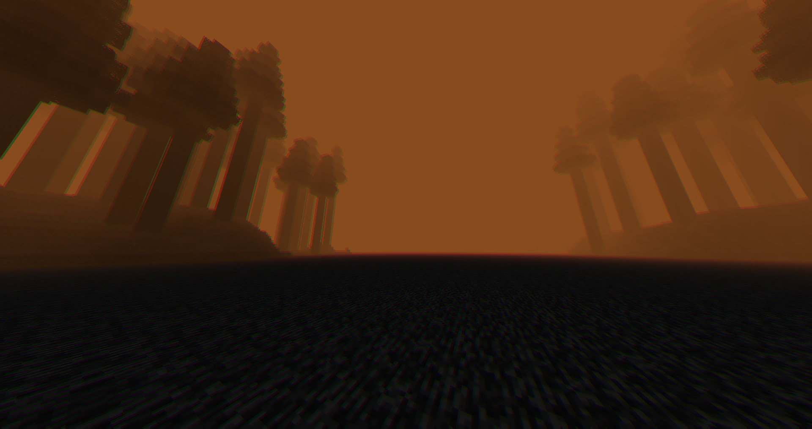
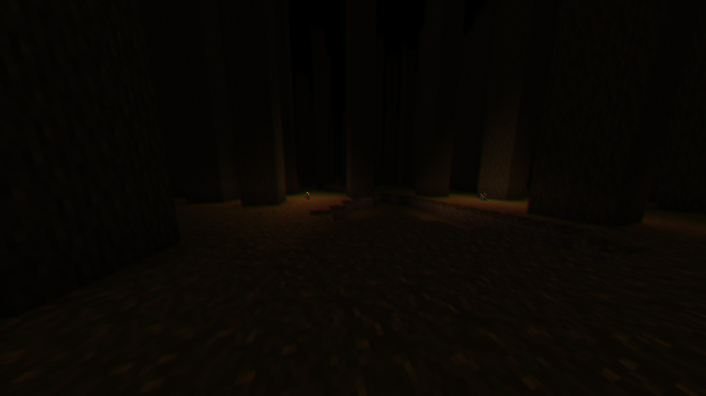
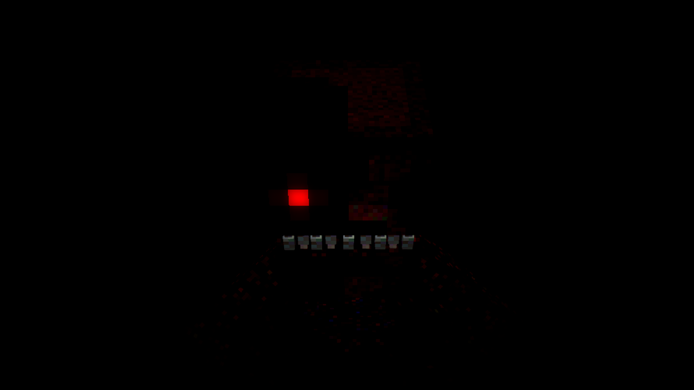